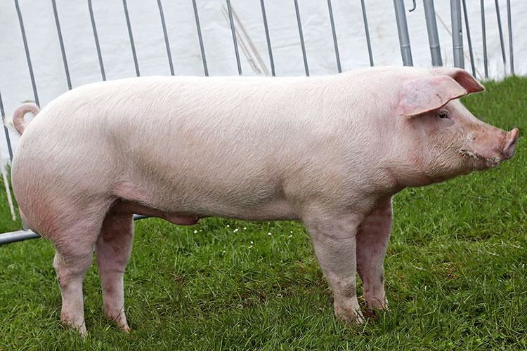
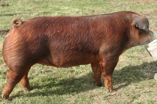
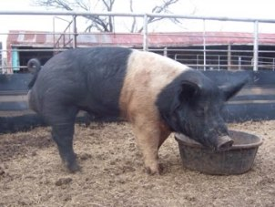

|
Pigs
|
|
The main breeds of pigs in Kenya are the Large White, Landrace, Hampshire, and Duroc. Each of these pig breed has its own unique characteristics that make it suitable for a particular production system and market. Pig performance depends on their genetic merit and the environment they are raised in. As you settle for any one breed the market for the pig products should always be a priority as consumers are always very choosy. Here is a description of the five common breeds that are available in Kenya. Large White 
Originally developed as an outdoor breed, the Large White is a robust, adaptable and of higher performance thanLarge White Pig most other breeds. They do very well in intensive production systems. Most pig farmers in the country prefer this breed because of its wide availability. Characteristics
Uses and performance The Large White is commonly used in crossbreeding or hybrid programs, with the most popular cross being Large White and Landrace. This cross is often used as the maternal line in commercial herds. A third breed such as a Duroc or Hampshire is often used as a terminal sire. Their hams tend to be of a lesser quality compared to other breeds, but have a high lean meat to fat ratio, making them suitable for the modern market. Their crossbred offspring have a better meat structure. The Landrace Originally developed in Denmark by crossing the native pig with the Large White, The Landrace is a flexible breedLandrace performing well under either indoor or outdoor systems of management. Its excellently fleshed carcass is ideal for either fresh pork or bacon production. Breed Characteristics Uses and Peformance The breed has superior carcass quality mainly because of the large size of their eye muscle. In addition, the Landrace is noted for its early, rapid growth, and its weight at weaning is higher than that of other breeds. The Landrace is popular in cross-breeding programs with the Large White breed. The greatest strength of the breed is its acknowledged ability to improve other breeds of pig when crossed to produce hybrid gilts. Duroc Also referred to as the "Red Hogs" the Duroc is an older breed of domestic American hog. It can survive in extreme cold and wet conditions. Its tenacity in looking after its young combined with its docility makes it an ideal outdoor pig. The flesh is succulent and heavy muscled makes it very suitable for anything from light pork to heavy hog production. Durocs are some of the sweetest hogs in the world. Characteristics Uses and performance Traditionally, Durocs have been use as terminal sires when crossed with Large White/Landrace cross sows. This cross is very suitable for the bacon. The Duroc or Duroc cross does not make a good maternal sire. Litter size is lower than that of other breeds and the boars are known to be aggressive. Hampshire The Hampshire was developed in the United States of America. Regarded by many as the best terminal sire breedHampshire boar for all purpose, the breed having the leanest meat is used extensively as the sire of cross-bred pigs for pork. They are large, hardy breed with black and white markings. < font-size="20px">Their head, ears, and shoulders are usually black, as are their rear legs and tail.They have large upright ears. Uses and performance They are a favorite of small farmers because of their good temperament, fast growth rate and large litters usually between 8 and 14 piglets and sows make excellent mothers. It can cross with nearly any other breed and those traits will hold true. It is used extensively as the sire of cross bred pigs for pork and bacon production. The Hampshire is very prolific. It produces an abundance of lean meat and has more meat than the large white or Landrace. Other breeds < font-size="20px">Other breeds worth mentioning are the Pietrain and saddleback. The Pietrain Pig is a breed which was native to the village of Piétrain in Wallonia, Belgium. The Pietrain is famous for its high yield of lean meat but is associated with the presence of the halothane gene. The saddleback pig was the precursor to the Large White and passing on most of its characteristics and performance. |